60. Cylinder Head Assemble
Cylinder Head Assemble
Tools Required
* J 8062 Valve Spring Compressor
* J 38820 Valve Stem Seal Installer
* J 38821 Valve Spring Compressor Adapter
* J-43059-A Valve Retainer Remover/Installer
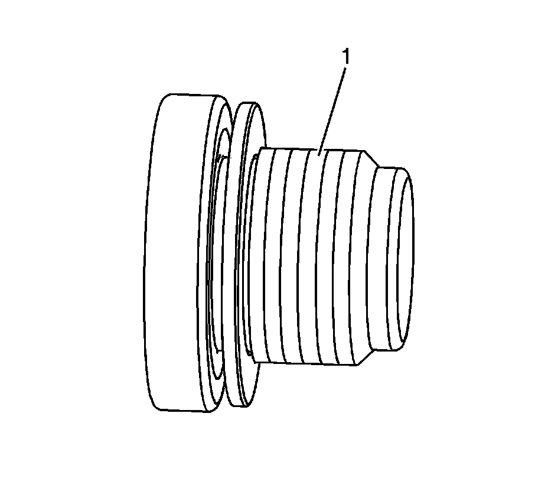
1. Apply sealant GM P/N 12345382 (Canadian P/N 10953489) to the threads (1) of the core hole threaded plugs.
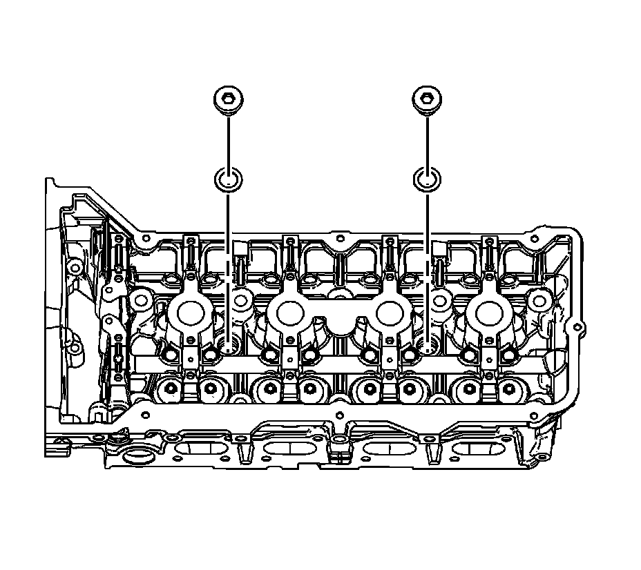
Notice: Refer to Fastener Notice (Fastener Notice) .
2. Install the core hole threaded plugs.
Tighten the core hole threaded plugs to 80 N.m (60 lb ft).
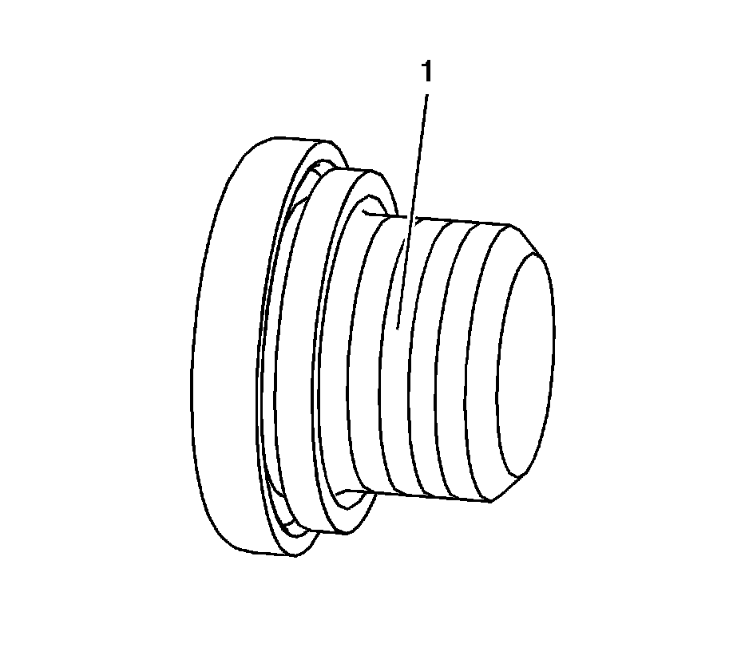
3. Apply sealant GM P/N 12345382 (Canadian P/N 10953489) to the threads (1) of the oil gallery threaded plugs.
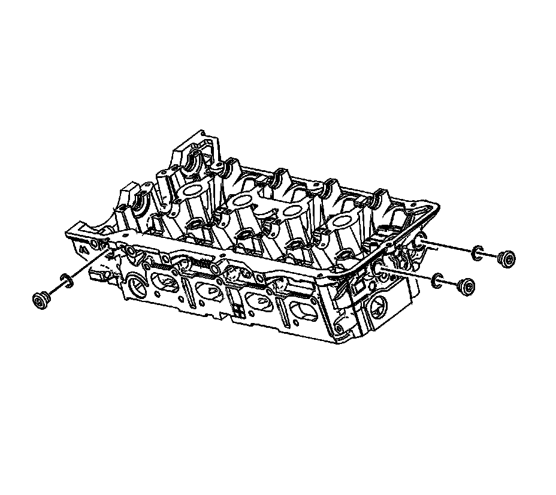
4. Install the oil gallery threaded plugs.
Tighten the oil gallery threaded plugs to 60 N.m (44 lb ft).
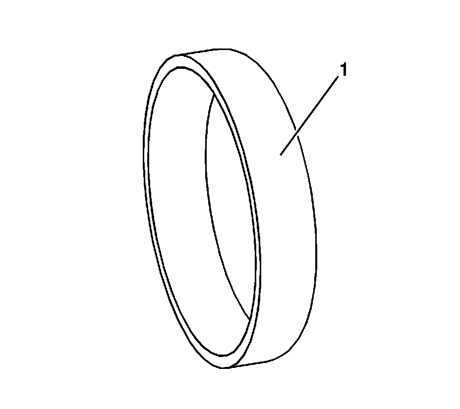
5. Apply sealant GM P/N 12345382 (Canadian P/N 10953489) to the outside diameter (1) of the NEW engine coolant expansion plugs.
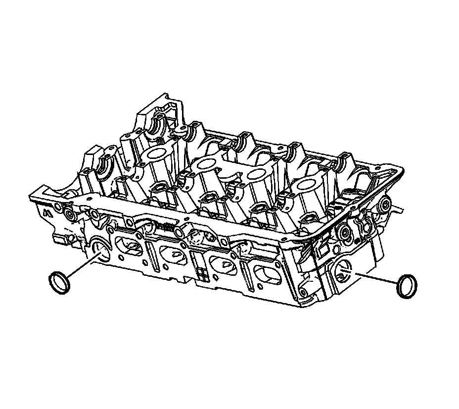
6. Install the NEW engine coolant expansion plugs.
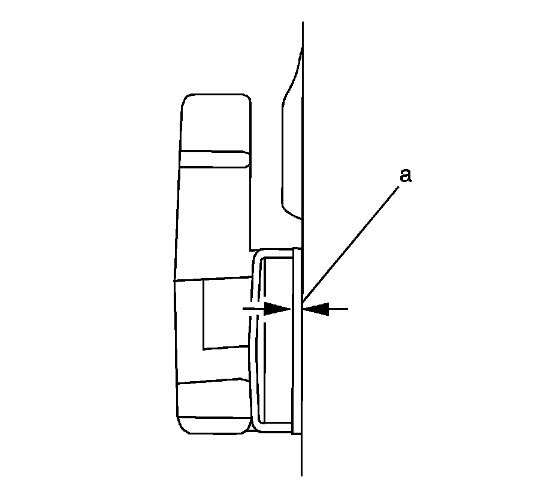
7. Ensure the engine coolant expansion plugs are installed to the proper depth (a) of 0.00-0.50 mm (0.00-0.020 in) deep.
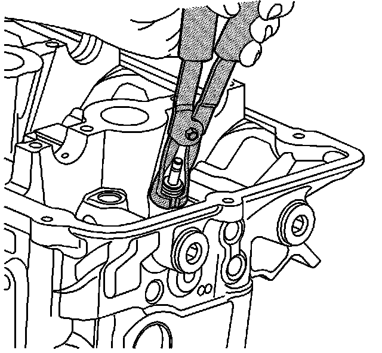
8. Lubricate the valve stem with clean engine oil.
9. Insert the valve into the valve guide until it bottoms on the valve seat.
10. Lubricate the new valve seal with engine oil.
11. Using the J 38820 , install the new valve seal using the following procedure:
1. Place the valve lifter bore protector into the lifter bore.
2. Mount the new valve seal in the J 38820 .
3. Push and twist the new valve seal into position on the valve guide until the seal positively locks on the guide.
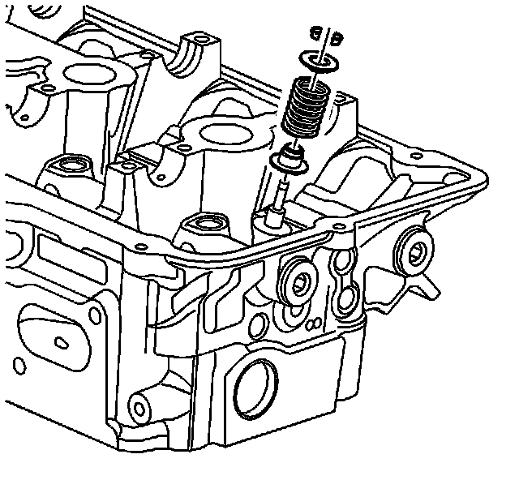
12. Position the valve spring on the spring seat.
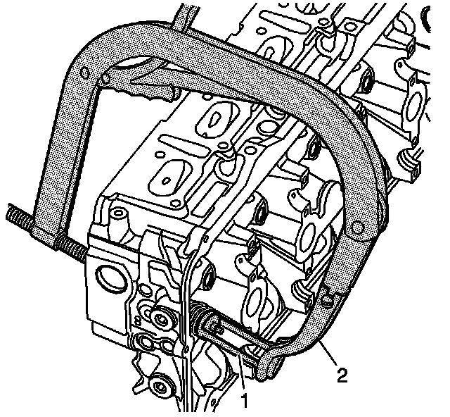
Caution: Compressed valve springs have high tension against the valve spring compressor. Valve springs that are not properly compressed by or released from the valve spring compressor can be ejected from the valve spring compressor with intense force. Use care when compressing or releasing the valve spring with the valve spring compressor and when removing or installing the valve stem keys. Failing to use care may cause personal injury.
Notice: Do not compress the valve springs less than 24.0 mm (0.943 in). Contact between the valve spring retainer and the valve stem oil seal can cause potential valve stem oil seal damage.
13. Compress the valve spring using the J 8062 (2) and the J 38821 (1).
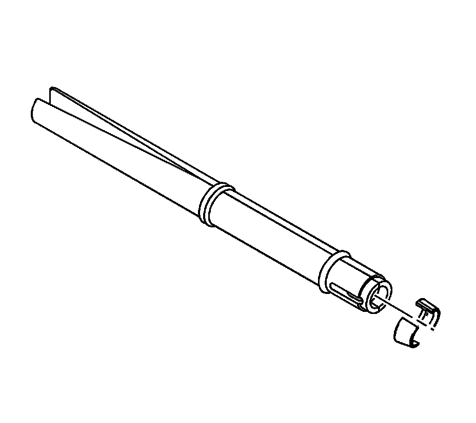
14. With the spring compressed, install the valve keepers into the J-43059-A .
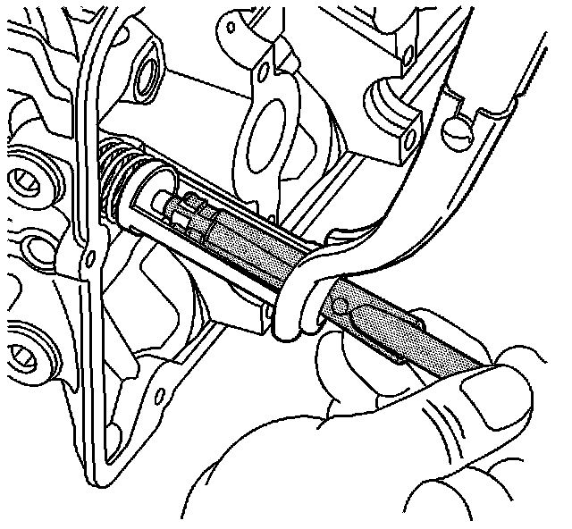
15. Place the keepers into position by pushing the tool downward.
16. Release the tension on the spring compressor and remove the J 38821 .
17. Verify that the valve keepers are installed by placing a rag over the valve tip and tapping with a dead-blow hammer. The valve keepers and the spring should remain in place.
18. Repeat this procedure for the remaining valves.